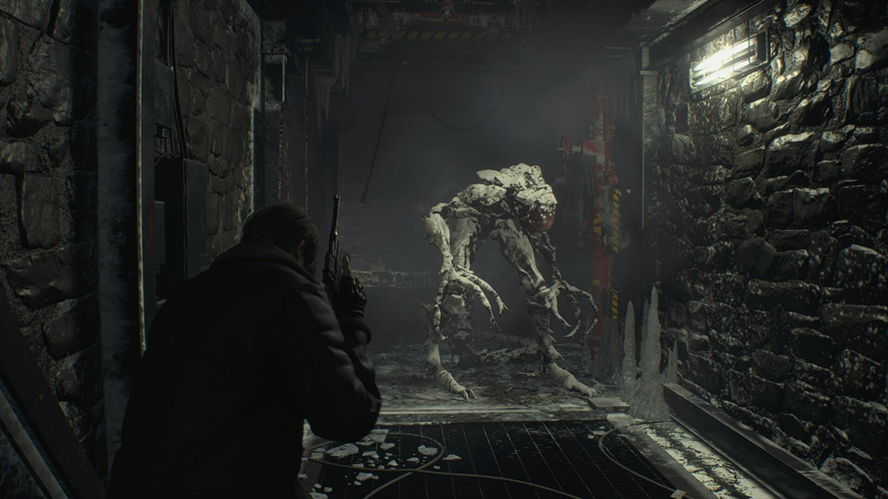
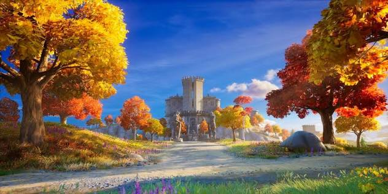
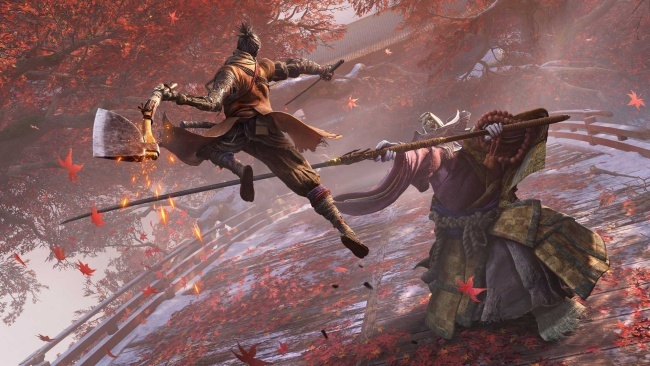

Привет! Это мой игровой блог
Меня зовут Глеб, я учусь в 11 классе. В свободное от учебы время я люблю играть в видеоигры разных жанров — от шутеров до хардкорных экшенов и хорроров.
На этом сайте я собрал список моих самых любимых игр, небольшие заметки и обзоры на них, а также лучшие скриншоты из моментов прохождения.
🏆 Мой Топ-3 Любимых Игр
Fortnite
Королевская битва с яркой графикой и частыми обновлениями. Люблю играть с друзьями по вечерам в режим со стройкой.
Sekiro: Shadows Die Twice
Очень сложный и красивый экшен про ниндзя. Боевая система завязана на идеальном парировании ударов.
Resident Evil
Легендарная серия хорроров. Отличный баланс между жуткой атмосферой, экономией патронов и загадками.
📝 Обзоры и полезные советы
Как перестать проигрывать в Sekiro
Советы по прохождению
Главное правило этой игры — перестать зажимать кнопку блока или бегать от босса. Нажимайте блок ровно в момент удара врага, чтобы сбить его концентрацию. Звук звонкого металла подскажет, что вы всё сделали правильно!
Почему Fortnite всё еще популярен?
Краткое мнение
Секрет игры — постоянная смена сезонов и отсутствие уныния. Разработчики постоянно добавляют новое оружие, локации и персонажей из кино и комиксов. А режим «Zero Build» сделал игру доступной для каждого.
Совет по экономии патронов в Resident Evil
Гайд по выживанию
Не пытайтесь расстрелять каждого зомби до конца. Стреляйте один раз в голову или колено, чтобы оглушить врага, а затем подбегайте и бейте его ударом ноги или ножом!
🖼️ Галерея скриншотов
Кадры, сделанные во время игрового процесса.

Эпичный момент из игры

Красивая локация

Победа над сложным боссом